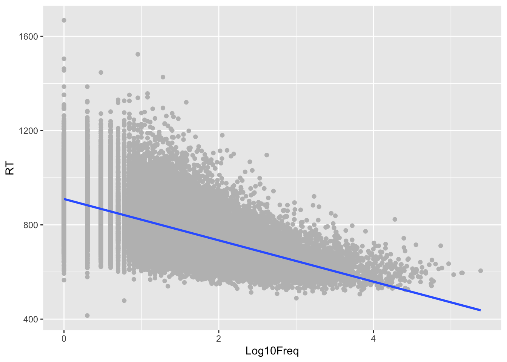

flowchart LR load["Load tidyverse"] read["Read data"] clean["Clean and transform data"] plot["Visualize"] load --> read read --> clean clean --> plot
5 Introduction to tidyverse 1: data manipulation
5.1 🌐 What is the tidyverse?
The tidyverse is a collection of R packages designed for data science. These packages share an underlying philosophy, grammar, and data structures, making it easier to learn and use them together. Tidyverse simplifies tasks like data manipulation, visualization, and modeling.
A full description of the tidyverse packages and functions is available in https://dplyr.tidyverse.org/
5.1.1 Why Use tidyverse?
Using the functions in tidyverse have a number of advantages versus the use of individual packages or the available base R functions:
Consistent and readable syntax.
Pipe operator (
%>%) for chaining operations (see later)Designed for tidy data principles as described in Wickham, Çetinkaya-Rundel, and Grolemund (2024).
It has a strong user community and documentation.
5.1.2 📦 Core tidyverse Packages
When you install and load the tidyverse package, you get access to the core packages listed in the table below without needing to load them individually
| Package | Usage |
|---|---|
ggplot2 |
Data visualization |
dplyr |
Data manipulation |
tidyr |
Data tidying |
readr |
Reading rectangular data (CSV, etc.) |
purrr |
Functional programming |
tibble |
Modern data frames |
stringr |
String manipulation |
forcats |
Working with categorical data (factors) |
We have already seen readr when loading files. We will explore today the tidyr functions.
5.1.3 Workflow Using tidyverse
A generic workflow using tidyverse can be represented as follows:
This flow result in a code as the following example:
Important
You are not expected to understand all the code below now. We will explain different elements during the course. It is just intended as an example of the workflow.
Warning: package 'ggplot2' was built under R version 4.3.3Warning: package 'tibble' was built under R version 4.3.3Warning: package 'purrr' was built under R version 4.3.3── Attaching core tidyverse packages ──────────────────────── tidyverse 2.0.0 ──
✔ dplyr 1.1.4 ✔ readr 2.1.4
✔ forcats 1.0.0 ✔ stringr 1.5.1
✔ ggplot2 3.5.2 ✔ tibble 3.3.0
✔ lubridate 1.9.3 ✔ tidyr 1.3.1
✔ purrr 1.0.4
── Conflicts ────────────────────────────────────────── tidyverse_conflicts() ──
✖ dplyr::filter() masks stats::filter()
✖ dplyr::lag() masks stats::lag()
ℹ Use the conflicted package (<http://conflicted.r-lib.org/>) to force all conflicts to become errors# Read data
df <- read_csv("./data/ELP_full_length_frequency.csv")Rows: 33075 Columns: 4
── Column specification ────────────────────────────────────────────────────────
Delimiter: ","
chr (1): Word
dbl (3): Log10Freq, length, RT
ℹ Use `spec()` to retrieve the full column specification for this data.
ℹ Specify the column types or set `show_col_types = FALSE` to quiet this message.# filter, clean and transform data
cleandata <- df %>%
filter(length>3) %>%
mutate(rt_per_character = RT / length)
# Visualize
ggplot(cleandata, aes(x = Log10Freq, y = RT)) + geom_point(color='grey') + geom_smooth(method="lm")`geom_smooth()` using formula = 'y ~ x'
5.2
5.3 A grammar of data manipulation
dplyr is a package within the tidyverse set of functions that allow to manipulate data. You can think of the functions in the package as a sort of “grammar of data manipulation”, providing a consistent set of verbs that help you solve the most common data manipulation challenges:
mutate()adds new variables that are functions of existing variables -> operates on columns.relocate(): moves variables to a different position (change order of columns) -> operates on columns.select()picks variables based on their names. -> operates on columns.rename(): change variable names -> operates on columnsarrange()changes the ordering of the rows. -> operates on rows.filter()picks cases based on their values. -> operates on rows.summarise()reduces multiple values down to a single summary (we will look at this in next workgroup).
Note
You will see that the functions in tidyverse libraries return a so called tibble . The details are beyond the scope of this course, but you can think of a tibble as a version of a data frame.
Let’s explore how to use the functions above with another of the datasets contained in the languageR package by Baayen (2008). We will use the DurationsOnt dataset that contains durational measurement of the Dutch prefix -ont from a study on a Spoken Dutch Corpus ( Pluymaekers, Ernestus, and Baayen (2005)).
#load library
library(languageR)Warning: package 'languageR' was built under R version 4.3.3#load dataset in the environment
data("durationsOnt")
#display the structure of the dataset
str(durationsOnt)'data.frame': 102 obs. of 12 variables:
$ Word : Factor w/ 102 levels "ontbeten","ontbijt",..: 1 2 3 4 5 6 7 8 9 10 ...
$ Frequency : num 3.09 4.84 0 3.76 1.95 ...
$ Speaker : Factor w/ 63 levels "N01001","N01002",..: 44 15 53 55 46 42 25 25 63 4 ...
$ Sex : Factor w/ 2 levels "female","male": 1 1 2 1 2 1 2 2 2 1 ...
$ YearOfBirth : num 72 80 52 60 74 70 76 76 76 66 ...
$ DurationOfPrefix : num 0.113 0.1 0.14 0.161 0.161 ...
$ DurationPrefixVowel : num 0.0695 0.0354 0.0474 0.0959 0.064 ...
$ DurationPrefixNasal : num 0.0439 0.0651 0.0925 0.0648 0.0973 ...
$ DurationPrefixPlosive: num 0 0 0 0 0 0 0 0 0 0 ...
$ NumberOfSegmentsOnset: int 1 1 1 1 1 1 1 1 2 2 ...
$ PlosivePresent : Factor w/ 2 levels "no","yes": 1 1 1 1 1 1 1 1 1 1 ...
$ SpeechRate : num 3.92 6.88 3.53 5.39 6.73 ...#look at the description of the variables
?durationsOnt
5.3.1 Selecting variables: select()
The function select() allows to choose a subset of variables (columns of interest). The function call includes as first parameter the dataset followed by the list of columns you would like to keep.
For this example we would like to look only at the duration of the Prefix in seconds and are not interested in the other variables.
durationsOnt_simplified <- select(durationsOnt, Word, Frequency, Speaker, Sex, YearOfBirth, DurationOfPrefix)
head(durationsOnt_simplified) Word Frequency Speaker Sex YearOfBirth DurationOfPrefix
24 ontbeten 3.0910425 N01143 female 72 0.113372
58 ontbijt 4.8441871 N01041 female 80 0.100478
40 ontbijtbuffet 0.0000000 N01157 male 52 0.139806
42 ontbijten 3.7612001 N01162 female 60 0.160739
60 ontbijtje 1.9459101 N01145 male 74 0.161283
21 ontbijtservies 0.6931472 N01134 female 70 0.176658The new dataframe durationsOnt_simplified contains now only the columns we specified.
Tip
If you have many columns, there is a simpler way to specify “keep from column X to column Y” without having to list each one of the individually by using : as in the example below that provides the same result. Of course this does not work if you want to select non-contiguous columns.
durationsOnt_simplified <- select(durationsOnt, Word:DurationOfPrefix)
head(durationsOnt_simplified) Word Frequency Speaker Sex YearOfBirth DurationOfPrefix
24 ontbeten 3.0910425 N01143 female 72 0.113372
58 ontbijt 4.8441871 N01041 female 80 0.100478
40 ontbijtbuffet 0.0000000 N01157 male 52 0.139806
42 ontbijten 3.7612001 N01162 female 60 0.160739
60 ontbijtje 1.9459101 N01145 male 74 0.161283
21 ontbijtservies 0.6931472 N01134 female 70 0.176658
5.3.2 Changing variable names: rename()
You can change the naming of the variable using rename as follows - You call the function with as first parameter the dataset and after with the list of variables to be renamed.\
Warning
Note that you write first the new name and then the old one.
durationsOnt_simplified_renamed <- rename(durationsOnt_simplified, Gender = Sex)
durationsOnt_simplified_renamed Word Frequency Speaker Gender YearOfBirth DurationOfPrefix
24 ontbeten 3.0910425 N01143 female 72 0.113372
58 ontbijt 4.8441871 N01041 female 80 0.100478
40 ontbijtbuffet 0.0000000 N01157 male 52 0.139806
42 ontbijten 3.7612001 N01162 female 60 0.160739
60 ontbijtje 1.9459101 N01145 male 74 0.161283
21 ontbijtservies 0.6931472 N01134 female 70 0.176658
69 ontbinding 1.0986123 N01078 male 76 0.148544
83 ontbindt 0.6931472 N01078 male 76 0.158397
30 ontbreekt 4.2626799 N01217 male 76 0.086736
10 ontbreken 3.7135721 N01011 female 66 0.160132
41 ontgaan 3.0445224 N01205 male 61 0.157300
62 ontging 2.1972246 N01069 male 37 0.169992
48 ontgraven 0.0000000 N01020 male 61 0.161262
63 ontgroening 1.0986123 N01147 female 45 0.198056
70 ontheven 0.0000000 N01029 male 39 0.172546
46 onthoud 3.4339872 N01103 female 77 0.168078
45 onthouden 5.4071718 N01132 male 78 0.174686
51 onthoudt 3.4011974 N01012 male 73 0.179994
100 onthuld 1.7917595 N01214 female 40 0.232413
43 onthulde 2.0794415 N01089 female 75 0.165369
55 onthullen 1.9459101 N01065 female 78 0.185638
98 ontkend 3.4339872 N01214 female 40 0.170969
78 ontkende 2.8332133 N01096 female 78 0.186745
16 ontkennen 4.1271344 N01058 male 75 0.160937
26 ontkent 3.6888795 N01066 female 78 0.179150
19 ontkom 2.0794415 N01209 female 49 0.215504
50 ontkracht 1.6094379 N01042 male 79 0.140938
6 ontlast 1.9459101 N01156 female 42 0.192938
27 ontlasten 1.6094379 N01159 male 44 0.166283
99 ontlasting 2.3978953 N01102 female 77 0.174332
18 ontleent 1.6094379 N01068 female 46 0.160403
54 ontloopt 1.6094379 N01147 female 45 0.175413
1 ontluikende 1.6094379 N01068 female 46 0.160924
20 ontmaskerd 0.6931472 N01051 female 79 0.190070
32 ontmaskeren 1.6094379 N01051 female 79 0.143948
31 ontmoet 5.0875963 N01212 female 83 0.119349
14 ontmoetingspunt 0.6931472 N01001 female 52 0.161911
28 ontmoette 3.3672958 N01029 male 39 0.201341
77 ontmoetten 2.7725887 N01157 male 52 0.167576
53 ontneemt 1.3862944 N01019 male 62 0.109592
101 ontploffing 3.6635616 N01083 female 75 0.115718
93 ontploffingen 1.3862944 N01171 female 76 0.114520
74 ontploft 3.4339872 N01086 male 69 0.147802
90 ontregel 0.6931472 N01031 female 38 0.191336
47 ontroerd 2.3025851 N01089 female 75 0.157852
13 ontroerend 2.4849066 N01144 male 71 0.171721
94 ontruimen 1.3862944 N01020 male 61 0.111411
75 ontslaan 3.2958369 N01132 male 78 0.106138
39 ontslag 4.6347290 N01151 female 56 0.101774
82 ontslagen 4.2626799 N01149 female 25 0.159804
44 ontsloten 2.0794415 N01019 male 62 0.117869
66 ontsluiten 1.3862944 N01019 male 62 0.114725
81 ontsnap 0.6931472 N01014 male 76 0.091196
76 ontsnappen 3.9318256 N01017 male 69 0.148343
67 ontsnapt 4.1431347 N01156 female 42 0.125200
89 ontspannen 4.6728288 N01041 female 80 0.143707
64 ontspannend 3.2580965 N01010 male 70 0.107453
15 ontspanning 4.5432948 N01214 female 40 0.180961
65 ontspanningsteam 0.0000000 N01163 female 61 0.121993
35 ontspoord 1.9459101 N01085 male 70 0.039299
96 ontspoort 1.3862944 N01085 male 70 0.074228
71 ontstaan 6.0684256 N01041 female 80 0.205519
17 ontstaat 5.0434251 N01020 male 61 0.086615
95 ontsteken 1.7917595 N01121 male 77 0.165329
73 ontsteking 3.8918203 N01037 female 81 0.113105
102 ontstekingsvocht 0.0000000 N01037 female 81 0.099240
68 ontstoken 3.0910425 N01144 male 71 0.115091
12 ontstond 4.5747110 N01090 female 76 0.127984
92 ontvang 2.0794415 N01105 female 80 0.161155
59 ontvangen 5.4337220 N01017 male 69 0.087884
7 ontvangst 3.9512437 N01062 male 48 0.102165
34 ontvangsten 3.1354942 N01068 female 46 0.183979
5 ontvangststation 0.0000000 N01002 male 52 0.130220
97 ontvangt 3.6888795 N01106 male 77 0.187346
9 ontving 3.2958369 N01002 male 52 0.130554
38 ontvingen 1.6094379 N01157 male 52 0.116323
87 ontvoerd 2.9444390 N01027 female 70 0.118748
88 ontvoeren 1.6094379 N01110 female 77 0.098185
2 ontvreemd 2.0794415 N01065 female 78 0.107143
4 ontwaken 1.3862944 N01157 male 52 0.230269
22 ontwapenend 0.6931472 N01133 male 79 0.174880
91 ontwerp 4.3040651 N01150 female 23 0.174030
3 ontwerpen 4.1431347 N01065 female 78 0.126606
57 ontwerper 3.0445224 N01042 male 79 0.158592
49 ontwijken 2.6390573 N01089 female 75 0.187598
29 ontwijkende 0.0000000 N01146 male 23 0.236841
84 ontwikkeld 5.0039463 N01135 male 64 0.170042
52 ontwikkelde 3.4965076 N01100 male 29 0.200608
72 ontwikkelen 5.3278762 N01085 male 70 0.075877
36 ontwikkeling 5.8777358 N01042 male 79 0.239222
23 ontwikkelingen 5.0998664 N01028 female 38 0.123474
79 ontwikkelingshulp 2.9444390 N01078 male 76 0.171507
37 ontwikkelingskaart 0.0000000 N01014 male 76 0.130127
25 ontwikkelingskaartje 0.0000000 N01014 male 76 0.108434
56 ontwikkelingspunt 0.0000000 N01014 male 76 0.124063
61 ontwikkelingswerk 1.9459101 N01051 female 79 0.114132
80 ontwikkelt 4.0253517 N01085 male 70 0.128376
86 ontworpen 3.7135721 N01170 male 78 0.139723
85 ontwricht 2.3025851 N01205 male 61 0.218802
33 ontzettend 6.7250336 N01068 female 46 0.164835
11 ontzettende 4.1896547 N01092 female 80 0.117997
8 ontzien 1.9459101 N01045 male 77 0.134899
5.3.3 Moving variable position: relocate()
With big datasets including many variables (columns), sometimes it is useful to change the order of the columns. This can be done with the relocate() function.
You call the function providing again as first parameter the dataset and then the column you want to move. By default the function will move the column specified to become the first. Let’s say that we want to have the Speaker Identifier as the first column, we will use the following:
durationsOnt_reordered <- relocate(durationsOnt_simplified_renamed, Speaker)
durationsOnt_reordered Speaker Word Frequency Gender YearOfBirth DurationOfPrefix
24 N01143 ontbeten 3.0910425 female 72 0.113372
58 N01041 ontbijt 4.8441871 female 80 0.100478
40 N01157 ontbijtbuffet 0.0000000 male 52 0.139806
42 N01162 ontbijten 3.7612001 female 60 0.160739
60 N01145 ontbijtje 1.9459101 male 74 0.161283
21 N01134 ontbijtservies 0.6931472 female 70 0.176658
69 N01078 ontbinding 1.0986123 male 76 0.148544
83 N01078 ontbindt 0.6931472 male 76 0.158397
30 N01217 ontbreekt 4.2626799 male 76 0.086736
10 N01011 ontbreken 3.7135721 female 66 0.160132
41 N01205 ontgaan 3.0445224 male 61 0.157300
62 N01069 ontging 2.1972246 male 37 0.169992
48 N01020 ontgraven 0.0000000 male 61 0.161262
63 N01147 ontgroening 1.0986123 female 45 0.198056
70 N01029 ontheven 0.0000000 male 39 0.172546
46 N01103 onthoud 3.4339872 female 77 0.168078
45 N01132 onthouden 5.4071718 male 78 0.174686
51 N01012 onthoudt 3.4011974 male 73 0.179994
100 N01214 onthuld 1.7917595 female 40 0.232413
43 N01089 onthulde 2.0794415 female 75 0.165369
55 N01065 onthullen 1.9459101 female 78 0.185638
98 N01214 ontkend 3.4339872 female 40 0.170969
78 N01096 ontkende 2.8332133 female 78 0.186745
16 N01058 ontkennen 4.1271344 male 75 0.160937
26 N01066 ontkent 3.6888795 female 78 0.179150
19 N01209 ontkom 2.0794415 female 49 0.215504
50 N01042 ontkracht 1.6094379 male 79 0.140938
6 N01156 ontlast 1.9459101 female 42 0.192938
27 N01159 ontlasten 1.6094379 male 44 0.166283
99 N01102 ontlasting 2.3978953 female 77 0.174332
18 N01068 ontleent 1.6094379 female 46 0.160403
54 N01147 ontloopt 1.6094379 female 45 0.175413
1 N01068 ontluikende 1.6094379 female 46 0.160924
20 N01051 ontmaskerd 0.6931472 female 79 0.190070
32 N01051 ontmaskeren 1.6094379 female 79 0.143948
31 N01212 ontmoet 5.0875963 female 83 0.119349
14 N01001 ontmoetingspunt 0.6931472 female 52 0.161911
28 N01029 ontmoette 3.3672958 male 39 0.201341
77 N01157 ontmoetten 2.7725887 male 52 0.167576
53 N01019 ontneemt 1.3862944 male 62 0.109592
101 N01083 ontploffing 3.6635616 female 75 0.115718
93 N01171 ontploffingen 1.3862944 female 76 0.114520
74 N01086 ontploft 3.4339872 male 69 0.147802
90 N01031 ontregel 0.6931472 female 38 0.191336
47 N01089 ontroerd 2.3025851 female 75 0.157852
13 N01144 ontroerend 2.4849066 male 71 0.171721
94 N01020 ontruimen 1.3862944 male 61 0.111411
75 N01132 ontslaan 3.2958369 male 78 0.106138
39 N01151 ontslag 4.6347290 female 56 0.101774
82 N01149 ontslagen 4.2626799 female 25 0.159804
44 N01019 ontsloten 2.0794415 male 62 0.117869
66 N01019 ontsluiten 1.3862944 male 62 0.114725
81 N01014 ontsnap 0.6931472 male 76 0.091196
76 N01017 ontsnappen 3.9318256 male 69 0.148343
67 N01156 ontsnapt 4.1431347 female 42 0.125200
89 N01041 ontspannen 4.6728288 female 80 0.143707
64 N01010 ontspannend 3.2580965 male 70 0.107453
15 N01214 ontspanning 4.5432948 female 40 0.180961
65 N01163 ontspanningsteam 0.0000000 female 61 0.121993
35 N01085 ontspoord 1.9459101 male 70 0.039299
96 N01085 ontspoort 1.3862944 male 70 0.074228
71 N01041 ontstaan 6.0684256 female 80 0.205519
17 N01020 ontstaat 5.0434251 male 61 0.086615
95 N01121 ontsteken 1.7917595 male 77 0.165329
73 N01037 ontsteking 3.8918203 female 81 0.113105
102 N01037 ontstekingsvocht 0.0000000 female 81 0.099240
68 N01144 ontstoken 3.0910425 male 71 0.115091
12 N01090 ontstond 4.5747110 female 76 0.127984
92 N01105 ontvang 2.0794415 female 80 0.161155
59 N01017 ontvangen 5.4337220 male 69 0.087884
7 N01062 ontvangst 3.9512437 male 48 0.102165
34 N01068 ontvangsten 3.1354942 female 46 0.183979
5 N01002 ontvangststation 0.0000000 male 52 0.130220
97 N01106 ontvangt 3.6888795 male 77 0.187346
9 N01002 ontving 3.2958369 male 52 0.130554
38 N01157 ontvingen 1.6094379 male 52 0.116323
87 N01027 ontvoerd 2.9444390 female 70 0.118748
88 N01110 ontvoeren 1.6094379 female 77 0.098185
2 N01065 ontvreemd 2.0794415 female 78 0.107143
4 N01157 ontwaken 1.3862944 male 52 0.230269
22 N01133 ontwapenend 0.6931472 male 79 0.174880
91 N01150 ontwerp 4.3040651 female 23 0.174030
3 N01065 ontwerpen 4.1431347 female 78 0.126606
57 N01042 ontwerper 3.0445224 male 79 0.158592
49 N01089 ontwijken 2.6390573 female 75 0.187598
29 N01146 ontwijkende 0.0000000 male 23 0.236841
84 N01135 ontwikkeld 5.0039463 male 64 0.170042
52 N01100 ontwikkelde 3.4965076 male 29 0.200608
72 N01085 ontwikkelen 5.3278762 male 70 0.075877
36 N01042 ontwikkeling 5.8777358 male 79 0.239222
23 N01028 ontwikkelingen 5.0998664 female 38 0.123474
79 N01078 ontwikkelingshulp 2.9444390 male 76 0.171507
37 N01014 ontwikkelingskaart 0.0000000 male 76 0.130127
25 N01014 ontwikkelingskaartje 0.0000000 male 76 0.108434
56 N01014 ontwikkelingspunt 0.0000000 male 76 0.124063
61 N01051 ontwikkelingswerk 1.9459101 female 79 0.114132
80 N01085 ontwikkelt 4.0253517 male 70 0.128376
86 N01170 ontworpen 3.7135721 male 78 0.139723
85 N01205 ontwricht 2.3025851 male 61 0.218802
33 N01068 ontzettend 6.7250336 female 46 0.164835
11 N01092 ontzettende 4.1896547 female 80 0.117997
8 N01045 ontzien 1.9459101 male 77 0.134899The Speaker variable is now the first. If we want to define a specific location, we can use the arguments .after or .before . For instance, if we want to move the Gender to be just after the Speaker column we will call the following:
durationsOnt_reordered <- relocate(durationsOnt_reordered, Gender, .after = Speaker)
durationsOnt_reordered Speaker Gender Word Frequency YearOfBirth DurationOfPrefix
24 N01143 female ontbeten 3.0910425 72 0.113372
58 N01041 female ontbijt 4.8441871 80 0.100478
40 N01157 male ontbijtbuffet 0.0000000 52 0.139806
42 N01162 female ontbijten 3.7612001 60 0.160739
60 N01145 male ontbijtje 1.9459101 74 0.161283
21 N01134 female ontbijtservies 0.6931472 70 0.176658
69 N01078 male ontbinding 1.0986123 76 0.148544
83 N01078 male ontbindt 0.6931472 76 0.158397
30 N01217 male ontbreekt 4.2626799 76 0.086736
10 N01011 female ontbreken 3.7135721 66 0.160132
41 N01205 male ontgaan 3.0445224 61 0.157300
62 N01069 male ontging 2.1972246 37 0.169992
48 N01020 male ontgraven 0.0000000 61 0.161262
63 N01147 female ontgroening 1.0986123 45 0.198056
70 N01029 male ontheven 0.0000000 39 0.172546
46 N01103 female onthoud 3.4339872 77 0.168078
45 N01132 male onthouden 5.4071718 78 0.174686
51 N01012 male onthoudt 3.4011974 73 0.179994
100 N01214 female onthuld 1.7917595 40 0.232413
43 N01089 female onthulde 2.0794415 75 0.165369
55 N01065 female onthullen 1.9459101 78 0.185638
98 N01214 female ontkend 3.4339872 40 0.170969
78 N01096 female ontkende 2.8332133 78 0.186745
16 N01058 male ontkennen 4.1271344 75 0.160937
26 N01066 female ontkent 3.6888795 78 0.179150
19 N01209 female ontkom 2.0794415 49 0.215504
50 N01042 male ontkracht 1.6094379 79 0.140938
6 N01156 female ontlast 1.9459101 42 0.192938
27 N01159 male ontlasten 1.6094379 44 0.166283
99 N01102 female ontlasting 2.3978953 77 0.174332
18 N01068 female ontleent 1.6094379 46 0.160403
54 N01147 female ontloopt 1.6094379 45 0.175413
1 N01068 female ontluikende 1.6094379 46 0.160924
20 N01051 female ontmaskerd 0.6931472 79 0.190070
32 N01051 female ontmaskeren 1.6094379 79 0.143948
31 N01212 female ontmoet 5.0875963 83 0.119349
14 N01001 female ontmoetingspunt 0.6931472 52 0.161911
28 N01029 male ontmoette 3.3672958 39 0.201341
77 N01157 male ontmoetten 2.7725887 52 0.167576
53 N01019 male ontneemt 1.3862944 62 0.109592
101 N01083 female ontploffing 3.6635616 75 0.115718
93 N01171 female ontploffingen 1.3862944 76 0.114520
74 N01086 male ontploft 3.4339872 69 0.147802
90 N01031 female ontregel 0.6931472 38 0.191336
47 N01089 female ontroerd 2.3025851 75 0.157852
13 N01144 male ontroerend 2.4849066 71 0.171721
94 N01020 male ontruimen 1.3862944 61 0.111411
75 N01132 male ontslaan 3.2958369 78 0.106138
39 N01151 female ontslag 4.6347290 56 0.101774
82 N01149 female ontslagen 4.2626799 25 0.159804
44 N01019 male ontsloten 2.0794415 62 0.117869
66 N01019 male ontsluiten 1.3862944 62 0.114725
81 N01014 male ontsnap 0.6931472 76 0.091196
76 N01017 male ontsnappen 3.9318256 69 0.148343
67 N01156 female ontsnapt 4.1431347 42 0.125200
89 N01041 female ontspannen 4.6728288 80 0.143707
64 N01010 male ontspannend 3.2580965 70 0.107453
15 N01214 female ontspanning 4.5432948 40 0.180961
65 N01163 female ontspanningsteam 0.0000000 61 0.121993
35 N01085 male ontspoord 1.9459101 70 0.039299
96 N01085 male ontspoort 1.3862944 70 0.074228
71 N01041 female ontstaan 6.0684256 80 0.205519
17 N01020 male ontstaat 5.0434251 61 0.086615
95 N01121 male ontsteken 1.7917595 77 0.165329
73 N01037 female ontsteking 3.8918203 81 0.113105
102 N01037 female ontstekingsvocht 0.0000000 81 0.099240
68 N01144 male ontstoken 3.0910425 71 0.115091
12 N01090 female ontstond 4.5747110 76 0.127984
92 N01105 female ontvang 2.0794415 80 0.161155
59 N01017 male ontvangen 5.4337220 69 0.087884
7 N01062 male ontvangst 3.9512437 48 0.102165
34 N01068 female ontvangsten 3.1354942 46 0.183979
5 N01002 male ontvangststation 0.0000000 52 0.130220
97 N01106 male ontvangt 3.6888795 77 0.187346
9 N01002 male ontving 3.2958369 52 0.130554
38 N01157 male ontvingen 1.6094379 52 0.116323
87 N01027 female ontvoerd 2.9444390 70 0.118748
88 N01110 female ontvoeren 1.6094379 77 0.098185
2 N01065 female ontvreemd 2.0794415 78 0.107143
4 N01157 male ontwaken 1.3862944 52 0.230269
22 N01133 male ontwapenend 0.6931472 79 0.174880
91 N01150 female ontwerp 4.3040651 23 0.174030
3 N01065 female ontwerpen 4.1431347 78 0.126606
57 N01042 male ontwerper 3.0445224 79 0.158592
49 N01089 female ontwijken 2.6390573 75 0.187598
29 N01146 male ontwijkende 0.0000000 23 0.236841
84 N01135 male ontwikkeld 5.0039463 64 0.170042
52 N01100 male ontwikkelde 3.4965076 29 0.200608
72 N01085 male ontwikkelen 5.3278762 70 0.075877
36 N01042 male ontwikkeling 5.8777358 79 0.239222
23 N01028 female ontwikkelingen 5.0998664 38 0.123474
79 N01078 male ontwikkelingshulp 2.9444390 76 0.171507
37 N01014 male ontwikkelingskaart 0.0000000 76 0.130127
25 N01014 male ontwikkelingskaartje 0.0000000 76 0.108434
56 N01014 male ontwikkelingspunt 0.0000000 76 0.124063
61 N01051 female ontwikkelingswerk 1.9459101 79 0.114132
80 N01085 male ontwikkelt 4.0253517 70 0.128376
86 N01170 male ontworpen 3.7135721 78 0.139723
85 N01205 male ontwricht 2.3025851 61 0.218802
33 N01068 female ontzettend 6.7250336 46 0.164835
11 N01092 female ontzettende 4.1896547 80 0.117997
8 N01045 male ontzien 1.9459101 77 0.134899Now that we have selected the variables that we want and in the order that we want them, let’s filter the data to select some cases
5.3.4 Selecting cases: filter()
We can select cases or observations based on a criteria using the filter() function. The filter function is called providing as a first parameter the dataset, followed by a condition or criteria to use for the selection.
Let’s say that we want to make an analysis on the duration of people born after 1970
durationsOnt_reordered_filtered_age <- filter(durationsOnt_reordered,YearOfBirth > 70)
#check on the minimum value of the Year of Birth with the function min()
min(durationsOnt_reordered$YearOfBirth)[1] 23min(durationsOnt_reordered_filtered_age$YearOfBirth)[1] 71As you can see on the example, the filter() selected the cases based on the condition specified.
If we wanted to select for example only the cases for Females, we will have used the filter as Gender == "female" . What about if we want to select the females born after 1970 in a single step? You can combine conditions using the operators & (meaning “and” ) and | (meaning “or”). For example:
durationsOnt_reordered_filtered_age_gender <- filter(durationsOnt_reordered,(YearOfBirth > 70) & (Gender=="female"))
durationsOnt_reordered_filtered_age_gender Speaker Gender Word Frequency YearOfBirth DurationOfPrefix
24 N01143 female ontbeten 3.0910425 72 0.113372
58 N01041 female ontbijt 4.8441871 80 0.100478
46 N01103 female onthoud 3.4339872 77 0.168078
43 N01089 female onthulde 2.0794415 75 0.165369
55 N01065 female onthullen 1.9459101 78 0.185638
78 N01096 female ontkende 2.8332133 78 0.186745
26 N01066 female ontkent 3.6888795 78 0.179150
99 N01102 female ontlasting 2.3978953 77 0.174332
20 N01051 female ontmaskerd 0.6931472 79 0.190070
32 N01051 female ontmaskeren 1.6094379 79 0.143948
31 N01212 female ontmoet 5.0875963 83 0.119349
101 N01083 female ontploffing 3.6635616 75 0.115718
93 N01171 female ontploffingen 1.3862944 76 0.114520
47 N01089 female ontroerd 2.3025851 75 0.157852
89 N01041 female ontspannen 4.6728288 80 0.143707
71 N01041 female ontstaan 6.0684256 80 0.205519
73 N01037 female ontsteking 3.8918203 81 0.113105
102 N01037 female ontstekingsvocht 0.0000000 81 0.099240
12 N01090 female ontstond 4.5747110 76 0.127984
92 N01105 female ontvang 2.0794415 80 0.161155
88 N01110 female ontvoeren 1.6094379 77 0.098185
2 N01065 female ontvreemd 2.0794415 78 0.107143
3 N01065 female ontwerpen 4.1431347 78 0.126606
49 N01089 female ontwijken 2.6390573 75 0.187598
61 N01051 female ontwikkelingswerk 1.9459101 79 0.114132
11 N01092 female ontzettende 4.1896547 80 0.117997
5.3.5 Reordering cases: arrange()
Finally, the arrange() function orders the dataset by a selected value. For example to order the dataframe by Frequency:
durationsOnt_reordered_filtered_age_gender_ordered <- arrange(durationsOnt_reordered_filtered_age_gender, Frequency)
durationsOnt_reordered_filtered_age_gender_ordered Speaker Gender Word Frequency YearOfBirth DurationOfPrefix
102 N01037 female ontstekingsvocht 0.0000000 81 0.099240
20 N01051 female ontmaskerd 0.6931472 79 0.190070
93 N01171 female ontploffingen 1.3862944 76 0.114520
32 N01051 female ontmaskeren 1.6094379 79 0.143948
88 N01110 female ontvoeren 1.6094379 77 0.098185
55 N01065 female onthullen 1.9459101 78 0.185638
61 N01051 female ontwikkelingswerk 1.9459101 79 0.114132
43 N01089 female onthulde 2.0794415 75 0.165369
92 N01105 female ontvang 2.0794415 80 0.161155
2 N01065 female ontvreemd 2.0794415 78 0.107143
47 N01089 female ontroerd 2.3025851 75 0.157852
99 N01102 female ontlasting 2.3978953 77 0.174332
49 N01089 female ontwijken 2.6390573 75 0.187598
78 N01096 female ontkende 2.8332133 78 0.186745
24 N01143 female ontbeten 3.0910425 72 0.113372
46 N01103 female onthoud 3.4339872 77 0.168078
101 N01083 female ontploffing 3.6635616 75 0.115718
26 N01066 female ontkent 3.6888795 78 0.179150
73 N01037 female ontsteking 3.8918203 81 0.113105
3 N01065 female ontwerpen 4.1431347 78 0.126606
11 N01092 female ontzettende 4.1896547 80 0.117997
12 N01090 female ontstond 4.5747110 76 0.127984
89 N01041 female ontspannen 4.6728288 80 0.143707
58 N01041 female ontbijt 4.8441871 80 0.100478
31 N01212 female ontmoet 5.0875963 83 0.119349
71 N01041 female ontstaan 6.0684256 80 0.205519What about if we want to use a reverse order? This can be done use the desc() modified on the variable to be used:
durationsOnt_reordered_filtered_age_gender_ordered <- arrange(durationsOnt_reordered_filtered_age_gender, desc(Frequency))
durationsOnt_reordered_filtered_age_gender_ordered Speaker Gender Word Frequency YearOfBirth DurationOfPrefix
71 N01041 female ontstaan 6.0684256 80 0.205519
31 N01212 female ontmoet 5.0875963 83 0.119349
58 N01041 female ontbijt 4.8441871 80 0.100478
89 N01041 female ontspannen 4.6728288 80 0.143707
12 N01090 female ontstond 4.5747110 76 0.127984
11 N01092 female ontzettende 4.1896547 80 0.117997
3 N01065 female ontwerpen 4.1431347 78 0.126606
73 N01037 female ontsteking 3.8918203 81 0.113105
26 N01066 female ontkent 3.6888795 78 0.179150
101 N01083 female ontploffing 3.6635616 75 0.115718
46 N01103 female onthoud 3.4339872 77 0.168078
24 N01143 female ontbeten 3.0910425 72 0.113372
78 N01096 female ontkende 2.8332133 78 0.186745
49 N01089 female ontwijken 2.6390573 75 0.187598
99 N01102 female ontlasting 2.3978953 77 0.174332
47 N01089 female ontroerd 2.3025851 75 0.157852
43 N01089 female onthulde 2.0794415 75 0.165369
92 N01105 female ontvang 2.0794415 80 0.161155
2 N01065 female ontvreemd 2.0794415 78 0.107143
55 N01065 female onthullen 1.9459101 78 0.185638
61 N01051 female ontwikkelingswerk 1.9459101 79 0.114132
32 N01051 female ontmaskeren 1.6094379 79 0.143948
88 N01110 female ontvoeren 1.6094379 77 0.098185
93 N01171 female ontploffingen 1.3862944 76 0.114520
20 N01051 female ontmaskerd 0.6931472 79 0.190070
102 N01037 female ontstekingsvocht 0.0000000 81 0.099240
5.4 Pipe operator (%>% or |> )
As you can see, in all the examples above we pass as first argument to the function the dataframe on which we want to make the operation.
Putting all the calls before together :
durationsOnt_simplified <- select(durationsOnt, Word:DurationOfPrefix)
durationsOnt_simplified_renamed <- rename(durationsOnt_simplified, Gender = Sex)
durationsOnt_reordered <- relocate(durationsOnt_simplified_renamed, Speaker)
durationsOnt_reordered_filtered_age_gender <- filter(durationsOnt_reordered,(YearOfBirth > 70) & (Gender=="female"))
durationsOnt_reordered_filtered_age_gender_ordered <- arrange(durationsOnt_reordered_filtered_age_gender, desc(Frequency))In this examples I created on every step a new variable with a different name to save the output of the functions, which created a lot of new variables. This might be useful only in cases when you want to save the intermediate steps. In reality this is rarely the case since anyway you can always execute again the complete flow if you want to change something, and it is a better practice.
That being the case, we could just use on variable for example called durationsOnt_processed that we overwrite in every step, resulting in something like this:
durationsOnt_processed <- select(durationsOnt, Word:DurationOfPrefix)
durationsOnt_processed <- rename(durationsOnt_processed, Gender = Sex)
durationsOnt_processed <- relocate(durationsOnt_processed, Speaker)
durationsOnt_processed <- filter(durationsOnt_processed,(YearOfBirth > 70) & (Gender=="female"))
durationsOnt_processed <- arrange(durationsOnt_processed, desc(Frequency))In this process though, still everytime the output of the one call is the input for the next step (in the end it is an analysis workflow).
If we were to write textually what we did to the data would be something like:
“Take the durationsOnt dataset then
Select columns … then
rename column Sex to Gender then
move column Speaker to the first column then
move column Gender after Speaker then
select cases of Females born after 1970 then
arrange by frequency in descending order.”
This is where the concept of a pipe was introduced in R. The pipe operator allows you to pass the result of one function directly into the next function as its first argument, without the need to explicitly write it. It’s widely used in the tidyverse, especially with dplyr.
The operator can be used with two syntax %>% or the new |> .
Using this, the examples before could be executed as below.
durationsOnt_processed <- durationsOnt %>% select(Word:DurationOfPrefix) %>%
rename(Gender = Sex) %>%
relocate(Speaker) %>%
relocate(Gender, .after = Speaker) %>%
filter((YearOfBirth > 70) & (Gender=="female")) %>%
arrange(desc(Frequency))
durationsOnt_processed Speaker Gender Word Frequency YearOfBirth DurationOfPrefix
71 N01041 female ontstaan 6.0684256 80 0.205519
31 N01212 female ontmoet 5.0875963 83 0.119349
58 N01041 female ontbijt 4.8441871 80 0.100478
89 N01041 female ontspannen 4.6728288 80 0.143707
12 N01090 female ontstond 4.5747110 76 0.127984
11 N01092 female ontzettende 4.1896547 80 0.117997
3 N01065 female ontwerpen 4.1431347 78 0.126606
73 N01037 female ontsteking 3.8918203 81 0.113105
26 N01066 female ontkent 3.6888795 78 0.179150
101 N01083 female ontploffing 3.6635616 75 0.115718
46 N01103 female onthoud 3.4339872 77 0.168078
24 N01143 female ontbeten 3.0910425 72 0.113372
78 N01096 female ontkende 2.8332133 78 0.186745
49 N01089 female ontwijken 2.6390573 75 0.187598
99 N01102 female ontlasting 2.3978953 77 0.174332
47 N01089 female ontroerd 2.3025851 75 0.157852
43 N01089 female onthulde 2.0794415 75 0.165369
92 N01105 female ontvang 2.0794415 80 0.161155
2 N01065 female ontvreemd 2.0794415 78 0.107143
55 N01065 female onthullen 1.9459101 78 0.185638
61 N01051 female ontwikkelingswerk 1.9459101 79 0.114132
32 N01051 female ontmaskeren 1.6094379 79 0.143948
88 N01110 female ontvoeren 1.6094379 77 0.098185
93 N01171 female ontploffingen 1.3862944 76 0.114520
20 N01051 female ontmaskerd 0.6931472 79 0.190070
102 N01037 female ontstekingsvocht 0.0000000 81 0.099240As you can see, the result is the case, but the code and data processing flow is much more readable, and there is no need to introduce intermediate variables.
You will become more familiar along the course with the basic usage of the tidyverse data manipulation.s